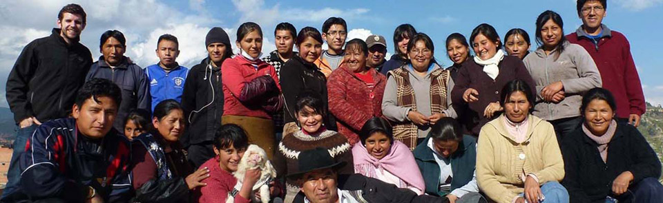
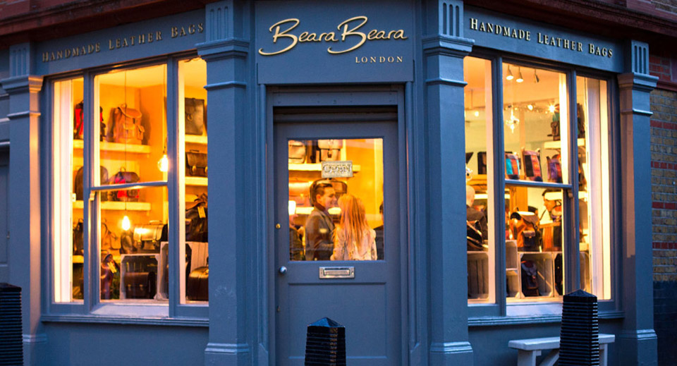
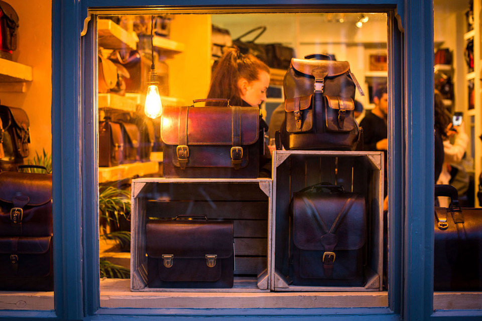
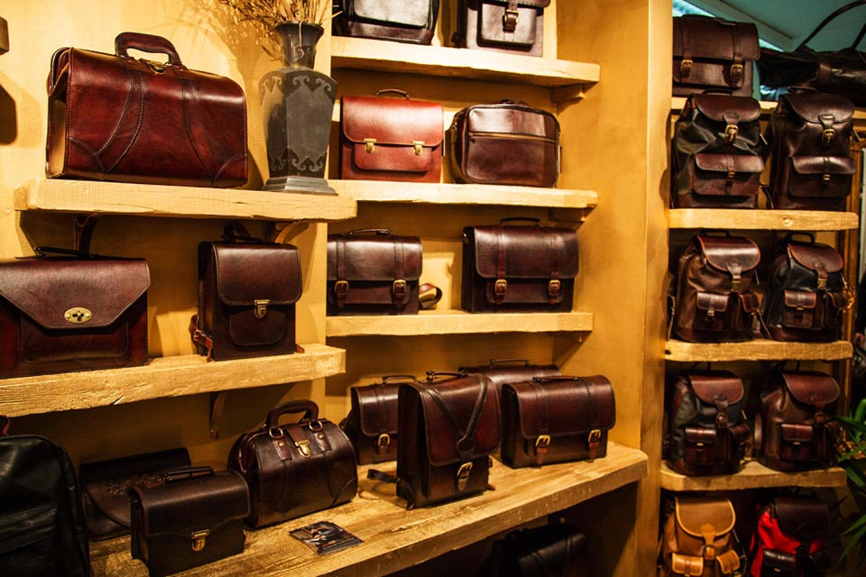

From Latin America to London
The story of Beara Beara starts with a journey through Latin America. Jake Bullough, who was best known at that time for his travel exploits on a bicycle adventure from his native Ireland to India, met the wonderful Julia, who along with the extended family have been making and selling leather bags from a tiny shop in the back streets of the city for many years, in Bolivia. From a initial idea to provide Julia’s struggling business and subsequent others, with a substantial amount of work with which would bring in much needed finances and eventually improve their standards of living, Beara Beara has been the home with design and continues to work closely with his teams both in London and in Bolivia on turning Jake’s designs into reality.

Unique and durable are the key words of Beara Beara. The skill, determination, respect and love that went into making each individual bag are the values behind the scene. Vintage Andean cloths is wildly used in Beara Beara’s collection as a signature. All are hand woven and defined by the region where they are made. The art of making these wonderful cloths has been passed down through generations, over handreds of years and reflects the history of the indigenous cultures in Bolivia.



---
Video of AW14 Collection